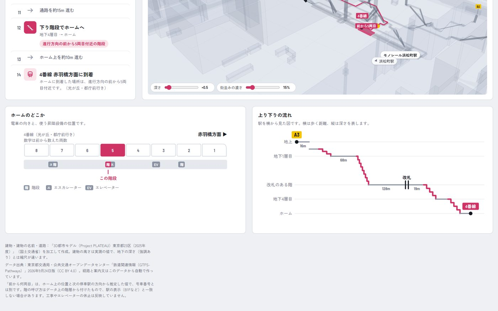

エキしるべとは
駅の出入口からホームまで（ホームから出入口まで）の歩き方を、立体図と1 手順ずつの案内で示します。深い地下駅で「どの階段を下りるのか」「いま何階にいるのか」が分かるように作りました。スマートフォンでもパソコンでも、ブラウザだけで使えます。
対応駅（都営大江戸線 12 駅）: 新宿西口・東新宿・上野御徒町・大門・赤羽橋・麻布十番・六本木・青山一丁目・国立競技場・代々木・新宿・都庁前
パソコンでは、ページをスクロールせずに 1 画面に収まります。左に要約・案内カード・歩く順番（歩く順番は枠の中でスクロール）、右に大きな立体図、その下にホームのどこかと上り下りの流れが並びます。スマートフォンでは縦に並びます。

1駅・出発・目的地・移動の条件を選ぶ
- 駅を選びます。
- 出発と目的地を、出入口（A3 など）かホーム（4番線 赤羽橋方面 など）から選びます。⇄ で入れ替えられます。
- 移動の条件を選びます。
| 標準 | いちばん早い経路。階段と並んでいるエスカレーターがあれば、エスカレーターを選びます。 |
|---|---|
| 階段を使う | 階段を優先。階段が無い所はエスカレーター、それも無ければエレベーター。 |
| エスカレーターを使う | エスカレーターを優先。エスカレーターが無い所（たとえばホームへ下りる向きが無い）は階段、それも無ければエレベーター。 |
| エレベーターを使う | 段差なし。階段・エスカレーターを使いません。行けない出入口のときは、行ける出入口を近い順に出します。 |
選んだ駅・出発・目的地・条件はこの端末に覚え、次に開いたときはそこから始まります。
上の欄には、かかる時間のめやすと、階段・エスカレーター・エレベーターの回数、ホームの前から何両目に着くか（降りるか）が出ます。
21 手順ずつ案内する
「▶ 案内をはじめる」か、左の「歩く順番」の手順を押すと、案内カードが出ます。
- ◀ もどる／つぎへ ▶ で 1 手順ずつ進みます（パソコンは ← → キーでも。Esc でやめる）。屋内では現在地が取れないので、歩いたら「つぎへ」を押してください。
- 上り下りの手順には、いまこことここへの階、階段・エスカレーター・エレベーターの形と向きのイラストが出ます。
- 改札の手順では、改札機を緑の矢印に沿って人が通り抜けます。出入口からホームへは「改札に入る」、ホームから出入口へは「改札を出る」。
- 通路の途中で大きく向きを変えるところは、「右に曲がって、通路を約◯m 進む」「左に曲がって、…」「折り返して、…」と分けて出します。
- 階段の手順で、すぐ隣に逆向き専用のエスカレーターがあるときは「となりのエスカレーターは上り専用です。」のように添えます（使えないエスカレーターと見分けるため）。
- 案内中、立体図はいまの手順の矢印を後ろ・左・上から見る位置へなめらかに移ります。曲がるときは、歩く人が曲がった向き（右に曲がれば時計回り）に回り込みます。パソコンでは案内中は上の要約を隠し、歩く順番を広く見せます。


3立体で見る
駅の通路網を階ごとに重ねた立体図です。マウスは左ドラッグで移動、右ドラッグで回転、ホイールで拡大します。スマホは 1 本指で回転、2 本指で拡大・移動します。
- いまの区間は、青い細い円柱の矢印で、白い「＞」の模様が進む向きに流れます。玉が始まり、矢じりが終わりです。いま歩いている階は濃く、ほかの階は薄くなります。
- 階段・エスカレーター・エレベーターの入口に波紋が出ます。
- 右上の方位マークは視点と一緒に回ります。押すと北が上になります。
- 上のボタンで斜めから／横から／真上からに切り替えられます。「歩く様子」は経路を後ろから追いかけます。
- 左下の深さで高さの強調を変えられます（最初は ×0.5）。データには実際の深さが無いので、階の順番を見やすく並べたものです。

街並みと目印の建物
地上には、国土交通省の 3D 都市モデル PLATEAU から、建物を実際の高さで、道路を車道・歩道に分けて描きます。建物は暖かい白の壁と色味を変えた屋根に、斜め上からの日差しと根元の陰を付け、形が分かるようにしています（地下の通路網が透けるよう半透明）。名前のある代表的な建物（東京都庁第一本庁舎など）は目印として名前を出し、画面の外にある建物は端に向きの矢印つきで出します。「街並み」ボタンで表示・非表示、左下の「街並みの濃さ」で濃さを変えられます。案内中は経路が見やすいように建物を消します。

写真の街並み（お試し）
「写真の街並み（お試し）」ボタン（街並みを表示しているときに出ます）を押すと、建物を PLATEAU の外壁・屋根の写真付きの建物に、地面を国土地理院の航空写真に切り替えます。道路・横断歩道・線路・川は航空写真に写ります。押した状態はこの端末に覚えます。
- 選んだときに、その駅のまわりのデータを PLATEAU と国土地理院の配信元から読み込みます。駅によって約 3.5〜34 MB あるので、スマートフォンでは通信量にご注意ください（右下に読み込みの進み具合が出ます）。
- PLATEAU に外壁・屋根の写真が無い建物は、明るい灰色で描きます。駅によっては半分近くの建物が写真なしです（例: 麻布十番の周りは約 46%）。
- 「街並みの濃さ」は 0% で消え、15%（最初の値）で半透明、100% で不透明になります。
- 案内中は、写真の建物も航空写真も消します。
4ホームのどこか・上り下りの流れ
- ホームのどこか: 8 両の電車と進行方向、ホームにある階段・エスカレーター・エレベーターの位置、使う設備を示します。数字は進行方向の前から数えた両数です。
- 上り下りの流れ: 駅を横から見た図です。横は歩く距離、縦は深さ。どこで何階分上り下りするかが一目で分かります。

データと、その限界
- 「前から何両目」は、ホームの乗車位置の並びと次の停車駅の方向から推定した値で、号車番号とは別です。
- 階の呼び方（地下 1 層目・改札のある階・中間の階など）はデータ上の階層から付けたもので、駅の表示（B1F など）と一致しない場合があります。
- 建物の高さは実測の値ですが、地下の深さは見やすく強調しているので、縮尺が違います。
使っているデータ
| 駅の中の通路網 | 東京都交通局・公共交通オープンデータセンター「鉄道関連情報（GTFS-Pathways）」2026年9月24日版（CC BY 4.0）。点 2,560・通路 2,864（階段 423・エスカレーター 187・エレベーター 129・改札 21）、出入口 60、ホーム 26 |
|---|---|
| 建物・建物の名前・道路 | 「3D都市モデル（Project PLATEAU）東京都23区（2025年度）」（国土交通省）を加工して作成。建物 3,656 棟、名前のある建物 31 棟、道路の面 3,589 |
| 写真の街並み（お試し） | 建物: 同じ PLATEAU の建築物モデル LOD2（写真付き、3D Tiles）。地面: 地理院タイル（シームレス空中写真）（国土地理院） |